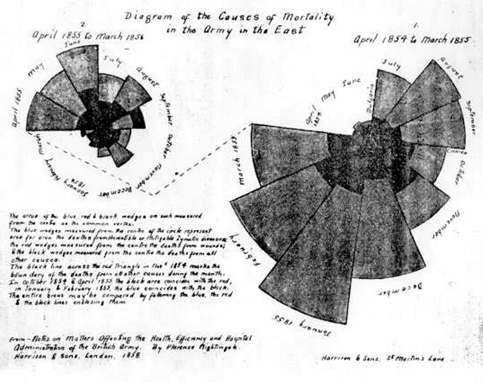
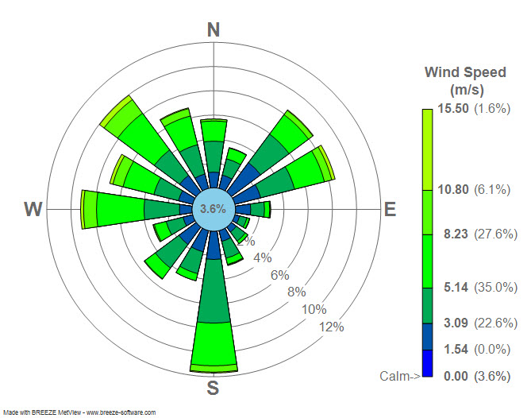
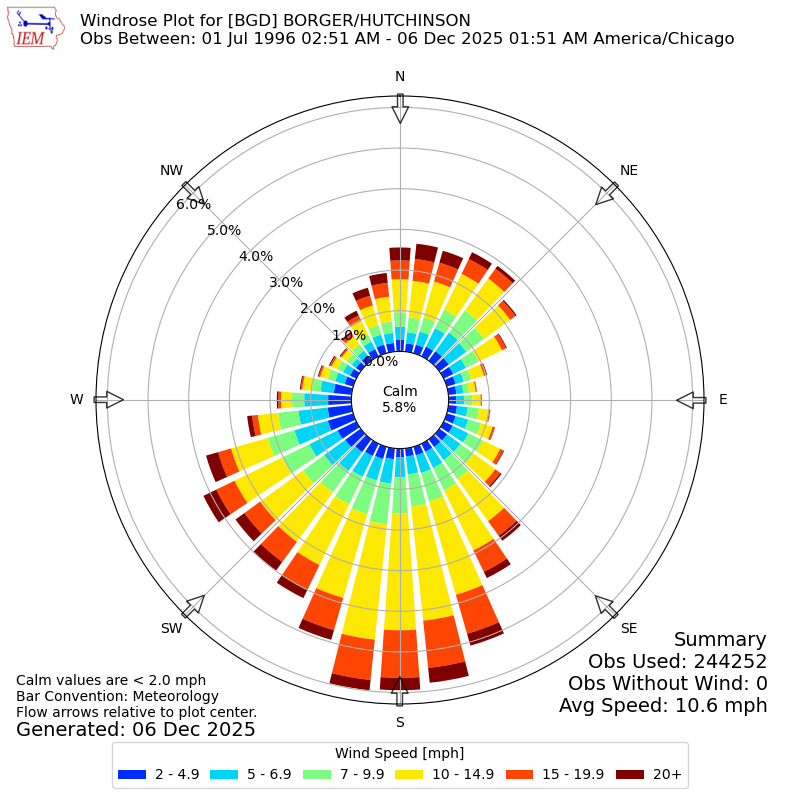

Rose / polar area chart
About
A rose chart — also called a polar area or Nightingale coxcomb diagram — wraps a series of bars around a circle, with each wedge's radius (and therefore area) encoding a value. Made famous by Florence Nightingale's mortality diagrams, it suits cyclical data such as months, weekdays, or hours, and directional or multi-part comparisons where the circular form mirrors the structure of what's being measured. It is visually striking, which makes it memorable — and, handled carelessly, easy to misread.
When to use
Use a rose/polar area chart for cyclical or seasonal data, for directional data where angle has meaning, or when a striking, memorable comparative display serves a communication goal better than a plain bar chart.
When not to use
Avoid it when precise comparison matters: because area grows with the square of the radius, equal-looking wedges can represent very different values, and a straight bar chart will read more accurately. Skip it too for audiences likely to misinterpret circular encodings.
References
Examples
Click any example to view full size and visit the original source.



